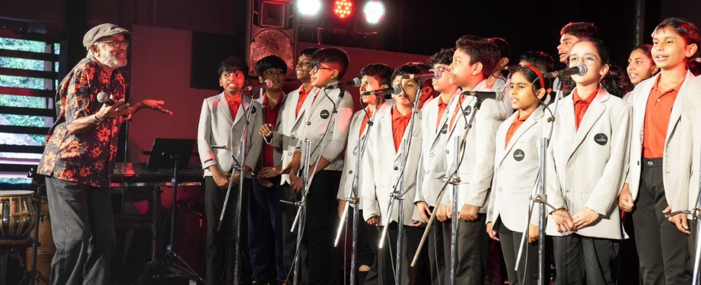

Home › Admissions
Welcoming students from age 3 to 19. Cambridge International pathway with Kerala's cultural heart.
Important to note. Please review all information on this page before submitting an inquiry. Admissions are subject to seat availability at each stage. Submitting an inquiry does not guarantee placement. Our admissions team will contact you within 2 working days.
All ages are as of June 1st of the academic year of entry.
| Stage | Cambridge Label | Age Range | Grade / Year |
|---|---|---|---|
| Early Years | LKG 1 & LKG 2 | 3–5 years | Pre-Primary |
| UKG / Stage 1 | Cambridge Primary (Entry) | 5–6 years | Grade 1 |
| Primary | Cambridge Primary (Stages 1–6) | 5–11 years | Grades 1–6 |
| Lower Secondary | Cambridge Lower Secondary (Stages 7–9) | 11–14 years | Grades 7–9 |
| Upper Secondary | IGCSE / O Level | 14–16 years | Grades 10–11 |
| Advanced | Cambridge A Level | 16–19 years | Grades 12–13 |
Fill in the form below. Takes less than 3 minutes.
Admissions team responds within 2 working days.
Meet the team and see the school in person.
Admission confirmed. Registration fee secures the seat.
Your child joins the Ananthamurthy community.
Fees are reviewed annually. Contact the school office for the current fee schedule. Financial support is available for families from economically weaker sections.
| Fee Type | Stage | Amount | Notes |
|---|---|---|---|
| Registration Fee | All stages | Contact school | One-time, non-refundable |
| Tuition Fee | Early Years | Contact school | Per term |
| Tuition Fee | Primary | Contact school | Per term |
| Activity Fee | All stages | Contact school | Includes Kalari, Music, Events |
* Fee placeholders — replace with actual figures from the school office.
Fill in the form or reach us directly — whichever is easier for you.
Address
SNRA No. A-4, Surya Nagar,
Near Central Polytechnic,
Vattiyoorkavu,
Thiruvananthapuram 695 013
Yes. Ananthamurthy International School is a Cambridge International Affiliated school (since March 2021). Students may also opt for the Kerala State Board pathway from Lower Secondary onwards.
Yes. The school follows a trilingual approach — English (medium of instruction), Malayalam, and Hindi. Kerala cultural heritage (Keraleeyam) is also an integral part of the curriculum.
Yes. Financial support is available for students from economically weaker sections and marginalized communities. Please mention this during your inquiry and our admissions team will share details.
Monday to Friday, 9:00 AM to 4:00 PM. The school office is open during the same hours.
Yes. Kalarippayattu (Kerala's ancient martial art) and Carnatic classical music are part of the core curriculum for all students from UKG onwards. They are not optional extras — they are central to the school's identity.